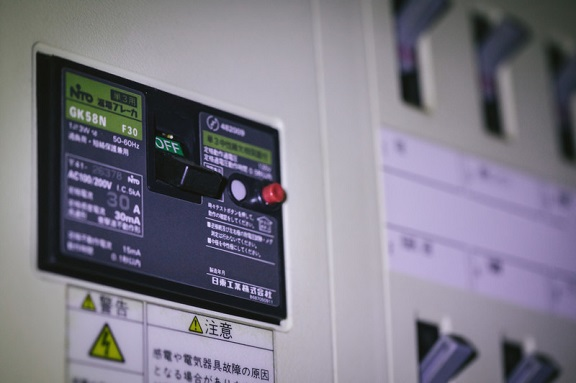
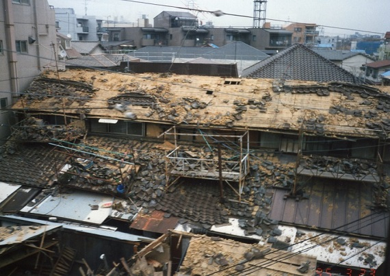
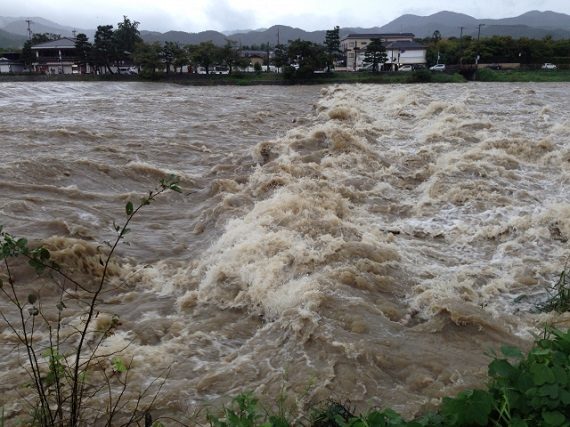
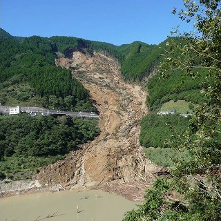

はじめに
地震大国と言われる日本。
国土特有の地形において、全国で頻繁に地震による被害が発生しています。
地震のみではなく、台風や津波、竜巻、土砂災害、大雪、雪崩...
災害はある日、突然やってきます。
"その時"あなたはどこにいるでしょうか？
職場？デパート？電車や地下鉄？はたまた、旅先の旅館？
"その時"あなたは何を考え、どう行動すれば良いのでしょうか？
"守るべきもの"がある人は大勢いらっしゃいます。
災害について "知る"ことで "守る" ことに繋げる必要があります。
そして、次の世代に"語り継ぐ" ・ "受け継ぐ"必要もあると思います。
このアプリは、国や地方公共団体のオープンデータを用いて、いざという時の"ツール"になるべく、開発しました。
スマートフォンが普及した現在、本アプリをハンドブック的な位置づけとして使用していただければと思います。
ご家族と防災について話したり、ご友人と情報共有したり、使い方は人ぞれぞれだと思います。
そして、日本という国で暮らしていく中で、大きな課題があります。
私たちは、この台地・自然とどのように向き合って生きていけば良いのでしょうか？
少しでも皆さんのヒントとなり、お役に立てられれば幸いにございます。
by 仁志.
災害の種類
災害にはどのようなものがあるでしょうか？
災害について "知る" ことが "守る" ことに繋がります。
地 震
（写真提供：神戸市）
☆メカニズム
・プレート境界型
海底にあるプレートとよばれる板のような岩盤が、地球の運動によりひずみ、ずれることによって起こる。
・活断層型
内陸にある活断層とよばれる地面の裂け目が動いて起こる。
☆震度とマグニチュード
・震度
その場所での地震の揺れを表す。日本で使われる言い方で、10階級に分かれる。
・マグニチュード
震源での地震エネルギーの規模を表す。マグニチュードが１増えるとエネルギーは32倍になる。
☆余震
大地震が発生した後は、余震が続くことが多い。
☆気象庁震度階級関連解説表

（出典「防災マニュアル」消防庁、気象庁HP）
☆地震防災INSIGHT
家にいる時

・机やテーブルの下にもぐる等して頭を守る！
学校の避難訓練を思い出そう。
・地震の次は火災に注意！
揺れがおさまったら、火の始末を忘れずに！
（写真提供：神戸市）
・慌てて外に飛び出さない！
瓦や看板が落ちてくる、ガラス等の破片が刺さる危険がある。

・避難する時は、電気のブレーカーを一旦切る！
電気が復旧した時に火災が起こる危険性がある。
・正しい情報を入手する。
テレビ、スマホのニュース、ラジオなどから発表される信頼できる情報を頼りに、落ち着いて行動する。
外にいる時

（写真提供：神戸市）
・落下物に注意！
瓦が落ちてきたり、ブロック塀が壊れたり、ビルの看板が落ちてくる可能性がある。
（写真提供：神戸市）
・余震に注意！
大地震の後は、余震が続く傾向にある。余震といえ、強い地震が発生する場合があるので、倒れかけた建物には近づかない。
・電車に乗っている時、デパート・映画館等では係員の指示に従い行動する！
津 波
（出典「災害写真データベース」、東日本大震災、津波で破壊された防波堤）
☆メカニズム
津波は、多くが海底でプレート型地震が起きた時に海底が持ち上がったり、沈み込んだりすることで起こる。
☆特 徴
・スピードの速さ
津波警報等が発表される前にやってくることがある。
・低い津波でも要注意
50cmの津波とはいえ、立っていられるのがやっとなほどの威力で押し寄せてくる。
避難する場合は、とにかくすぐに高い所で逃げることが大切です。
☆津波防災INSIGHT
・小さい震度でも発生することがある！
・何度もやってくる！
警報や避難勧告・指示が解除されるまで戻ってはいけない。
・見物は危険！
珍しいからといって近づくのは危険である。
風 水 害
台 風
（出典：気象庁HPより）
☆定 義
熱帯の海上で発生する低気圧を「熱帯低気圧」と呼ぶが、このうち北西太平洋（赤道より北で東経180度より西の領域）または南シナ海に存在し、なおかつ低気圧域内の最大風速（10分間平均）がおよそ17m/s（34ノット、風力８）以上のものを「台風」と呼ぶ。（気象庁HPより抜粋）
洪 水

☆メカニズム
台風・集中豪雨等により河川が増水し、堤防を越えた水が沿岸に被害を与える。
土砂災害

（出典：気象庁HPより）
☆メカニズム
大雨によって地盤が軟らかくなり、がけ崩れや地すべり、土石流をともなう。
☆前触れ
・がけ崩れ
（出典：国土地理院HPより）
がけからの水が濁る。
がけにひび割れが入る。
小石がパラパラと落ちてくる。
・地すべり
（出典：国土地理院HPより）
地面にひび割れができる。
沢や井戸の水が濁る。
斜面から水がふき出す。
・土石流
山鳴りがする。
雨が降り続いているのに川の水位が下がる。
川の流れが濁ったり流木がまざり始める。
高 潮
（1953年、北海南岸での高潮、オランダ南部ゼーラント州、Wikipedia：パブリック・ドメイン）
☆メカニズム
台風や低気圧の接近により、海面が上昇し、大波が沿岸部に押し寄せる。
竜 巻
（出典「災害写真データベース」、北海道佐呂間町の竜巻による災害（2006年））
☆現 象
発達した積乱雲によって作られる大気中の激しいうずまきのこと。
☆特 徴
・速さと威力
秒速100ｍを超える猛烈な風で、周りのあらゆるものを吹き飛ばす。
・年中発生
年間を通じて、いつでもどこでも発生する。
・日中に注意
夜間よりも日中の方が多い。

☆発生したら…
・屋内
窓ガラスが割れる危険があるので、窓から離れる。
・屋外
頑丈な建物に避難する。
頑丈な構造物に頭を抱えてうずくまる。
・車内
車も飛ばされる危険があるので、車内でも頭を抱えてうずくまる。
☆風水害防災INSIGHT
風水害は地震などの予想が難しい災害とは異なり、事前に情報収集ができていれば、余裕を持って行動できる。
・まずは天気予報の確認から！
日頃から天気予報を確認する習慣をつける。
・危険な時は中止の決断を！
旅行で山や海に行くなどの計画がある時は、天気予報を確認し、危険な場合は中止にする。
・家の周りの危険個所をチェック！
自治体の「ハザードマップ」から、家の周りの危険個所をチェックする。
自然災害
火山災害
☆種 類
・火砕流、火山灰や噴石
・溶岩流
・土石流
・地震（噴火活動に伴って発生）
・火山ガス
日本は「環太平洋造山帯」という火山ベルトに位置しており、活火山（噴火活動が盛んな火山のこと。）は110を数えます。
☆火山災害防災INSIGHT
山に出かける時は火山情報をチェックする。
噴石からは岩陰や丈夫な建物に避難する。
行政機関の避難指示に従って行動する。
火山ガス（有毒性）にも注意する。
雪 崩

（雪崩の瞬間、Wikipedia：パブリック・ドメイン）
☆現 象
山に積もった雪が崩れ落ちる。
雪崩被害の多くは「表層雪崩」によるものです。
☆表層雪崩
気温の低い状況で、積雪面の上に数10cm以上の大雪が降った場合に、新積雪層が滑り落ちる。
降雪中・降雪後・昼夜関係なく、大規模に動き出す。
☆雪崩防災INSIGHT
・立ち入り禁止場所には入らない。
・春先は雪崩がおきやすい季節なので、注意する！
・時速100kmをこえるスピードなため、逃げ切ることは不可能！
・巻き込まれても、あきらめない！
呼吸器官の確保、岩や樹木にしがみつく。
・大声を出して、仲間に知らせる。
落 雷
☆現 象
雷は雷雲の位置しだいで、平野、海面、山岳など、ところかまわず落ちる。
☆落雷防災INSIGHT
外にいる時
・高い木下は危険！
葉先から2m以上は離れる。
・軒先での雨宿りは危険！
建物の中に避難する。
・テニスラケットや釣竿（金属性、カーボンファイバー性）は手放して避難する
・乗り物の中は安全！
家にいる時
・テレビ等電化製品から距離を置く！
・落雷によりパソコン等が壊れる可能性があるので、注意する！
以下の資料をもとに仁志が加工・編集して作成しました。
・わたしの防災サバイバル手帳、消防庁、クリエイティブ・コモンズ・ライセンス 表示2.1 日本
どこにいる？
地震が発生した時、あなたはどこにいるでしょうか？
"その時" どう行動したら良いのでしょうか？
参考文献を基に様々なシーンを想定し、再構成してみました。
皆で考えてみましょう！
屋内編
☆一般住宅
日常生活中
・机やテーブルの下にもぐり、自分の身を守る。
・動く時は、スリッパ等を履く。ガラス片等で足を怪我する可能性がある。
・戸を開けて出入り口を確保する。
トイレ・お風呂
・風呂場では、タイルや鏡、トイレでは水洗タンクが落ちてくることがあるので、注意する。
・入浴中は、鏡やガラスの破損による怪我に注意する。
・浴槽の中では、風呂のふた等をかぶり、頭を守る。
・揺れがおさまってから、避難する。
台所
・テーブルの下にもぐり、身の安全を確保する。
・慌てて火を消そうとすると、やけどする危険があるので、揺れがおさまるのを待ってから火を消す。
・食器棚や冷蔵庫が倒れてくるだけではなく、中身が飛び出してくる事があるので、注意する。
寝ている時
・揺れで目が覚めたら、寝具にもぐりこむか、ベッドの中にうずくまる。
・枕元にはスリッパ、懐中電灯、ラジオやスマートフォンを置いておく。
・寝室にタンス等を置く場合は、天井と固定しておき、倒れないようにする。
☆マンション
・机の下にもぐり、揺れがおさまるのを待つ。
・高層階では、揺れの幅が大きくなる。
・非常口の確認をしておく。
☆職場・オフィス
・窓ガラスが割れることがあるので、窓辺から離れる。
・OA機器の落下に注意する。
・日頃から整理整頓を行い、職場環境を綺麗に心がける。
・避難時はエレベーターを使用しないようにする。
☆スーパー・デパート
・バックや買い物かごなどで頭を保護し、ショーケースなど倒れやすいものから離れる。
・ガラス製品や瀬戸物、その他、陳列棚の商品などの落下・転倒に注意する。
・エレベーターによる避難はしない。
☆映画館・劇場
・バックなどで頭を保護し、座席の間に身を隠して、揺れが収まるのを待つ。
・天井からの落下物や窓ガラス等に注意しながら、安全な場所に避難する。
・停電しても誘導灯や非常灯がつくので、慌てずに、係員の指示に従う。
・事前に避難口を確認しておく。
☆地下街
・停電になっても、非常照明がつくまでむやみに動かないようにする。
・地下街では６０ｍごとに非常口が設置されているため、一つの非常口に殺到せずに地上に落ち着いて脱出する。
・脱出するときは、壁づたいに歩いて避難する。
☆地下街
・教室内では、机の下に潜って落下物などから身を守り、慌てて外に飛び出すなど勝手な行動はせずに、教職員の指示に従う。
・廊下、運動場、体育館などでは、中央部に集まってしゃがむ。
・実験室などでは、薬品や火気に注意する。
・通学路が危険なこともあるので、勝手に帰宅しないようにする。
☆エレベーター
・全ての階のボタンを押し、最初に停止した階でおりるのが原則！
・ただし、停止した階で慌てておりるのではなく、階の状況を見極めるのも大切！
・エレベーターに閉じこめられても、焦らず冷静になって「非常用呼び出しボタン」等での連絡を取る。
屋外編
☆住宅地
・住宅地の路地にあるブロック塀や石塀は、強い揺れで倒れる危険がある。揺れを感じたら塀から離れる。
・電柱や自動販売機も倒れてくることがあるので、そばから離れる。
・屋根瓦や二階建て以上の住宅のベランダに置かれているエアコンの室外機、ガーデニング用のプランターなどが落下してくることがある。頭の上も注意する。
・強い揺れが起きると、耐震性能の低い住宅が倒壊する場合もある。これにより瓦礫や窓ガラスが道路内に散乱する可能性もあるので、揺れを感じたら周辺の状況に注意する。
☆オフィス街・中華街
・何はともあれ、頭上を保護する！
・オフィスビルの窓ガラスが割れて落下すると、時速40～60kmで広範囲に拡散する。
・ビルの外壁や張られているタイル、外壁に取り付けられている看板などが剥がれ落ちることもある。
・繁華街では、オフィス街には少ない、店の看板やネオンサインなどの落下・転倒物が加わる。
・鞄などで頭を保護し、できるだけ建物から離れる。
☆海 岸
・一番恐ろしいのは津波。とにかく高い所に避難する！
・津波は繰り返し襲って来て、第一波の後にさらに高い波が来ることもある。いったん波が引いても絶対に戻ってはいけない。
・避難標識が整備されている場合には避難する際の目安になる。
・水浴中の場合は、監視員やライフセーバーがいる海水浴場では指示に従って避難する。
☆川べり
・津波は水を湛えている川を遡る！
・流れに沿って上流側へ避難しても津波は追いかけてくる。
・流れに対して直角方向に素早く避難する。
☆山・丘陵地
・落石に注意し、急傾斜地など危険な場所から遠ざかる！
・登山やハイキングで山にいる時に強い揺れに襲われた場合には、まず落石から身を守る。
・地震で地盤がゆるみ、崩れやすくなっている可能性があるため、崖や急傾斜地など危険な場所には近づかない。
乗り物編
☆運転中
・揺れを感じたら
①急ブレーキは禁物！ハンドルをしっかり握り、前後の車に注意しながら徐々にスピードを落とし、道路の左側に停車する。
②エンジンを切り、揺れがおさまるまでは車外に出ず、カーラジオやスマートフォンから情報を入手する。
③避難の必要がある場合は、車のキーはつけたままにし、ドアをロックしないで、窓を閉める。
④連絡先を見えるところに書き、車検証などの貴重品を持ち、徒歩で避難する。
・車での避難は、緊急自動車などの妨げになる。
・高速道路では、普通の道路を走行中の対処に加え、以下の点にも留意する。
①高速走行しているのでハザードランプを点灯させ、前後の車に注意を喚起する。
②高速道路では約１ｋｍごとに非常口を設けているので、徒歩で地上に脱出することができる。
☆鉄 道
・強い揺れを感知すると電車は緊急停車する！
・座席に座っている場合には、低い姿勢をとって頭部を鞄などで保護し、立っている場合には手すりやつり革をしっかり握って転倒しないようにする。
・停車後は、乗務員の指示に従う。
☆新幹線
・新幹線は早期地震検知警戒システム（ユレダス）が作動して緊急停車する！
・高速走行しているので、座席に座っている場合には、前に飛び出さないように座席の間に体を隠し、立っている場合には手すりをしっかり握って転倒しないようにする。
・停車後は、乗務員の指示に従う。
☆地下鉄
・震度５弱程度の揺れを観測した場合に運転を停止し、線路途中なら安全を確認し、低速で最寄りの駅に向かう！
・座席に座っている場合には、低い姿勢をとって頭部を鞄などで保護し、立っている場合には手すりやつり革をしっかり握って転倒しないようにする。
・停電になっても非常灯が1時間程度は点灯するので、慌てずに行動する。
・地下鉄によっては高圧電線が線路脇に設置されているので、勝手に線路に飛び降りると危険！
・停車後は、乗務員の指示に従う。
☆バ ス
・強い揺れを感じた場合に、危険を回避するために急ブレーキが踏まれることがある！
・座席に座っている場合には、低い姿勢をとって頭部を鞄などで保護し、立っている場合には手すりやつり革をしっかり握って転倒しないようにする。
・停車後は、乗務員の指示に従う。
揺れが収まったら
☆身の安全の確保
・まずは、状況を確認し身の安全の確保を最優先します。慌てて行動すると思わぬ怪我をする恐れがあるので、冷静になることを心がけてください。
・揺れが収まったら、戸や窓を開ける等し、出口の確保に努めましょう！
☆避難の判断
☆避難の行動
☆帰宅困難者
☆救出・援護
以下の資料をもとに仁志が加工・編集して作成しました。
・防災マニュアル、消防庁、クリエイティブ・コモンズ・ライセンス 表示2.1 日本
何が必要？
防災対策を施す上で、何が必要になるでしょうか？
みんなで考えていきましょう！
☆自分の地域の避難所等の情報を把握する。
まずは、自分の地域の避難所はどこの施設が指定されているか、把握することが大切です。
いざ、避難するとなった時に、「どこに避難すれば良いのか？」と行動できなくなってしまいます。
そこで、都道府県単位で避難マップを作成しました。
ご自身の地域の避難所について、調べてみましょう！
☆家具を固定しよう！
統計・資料
防災に関する統計情報や各種資料をまとめました。
違う角度から防災を考えてみましょう！
☆自助・共助・公助
・自助…自分の身は自分で守る
・公助…行政機関が援助する
・共助…地域住民一体となって助け合う
阪神・淡路大震災における救助の主体と救出者数
（出典「平成26年度防災白書」）
グラフを見ると、80％近くの方々が「共助」により助けられていることが分かります。
東日本大震災では、市役所等が被災に会い、行政機関が麻痺してしまいました（公助の限界）。
巨大地震では、行政機関そのものが麻痺し、機能しなくなることも想定されることから、
地域住民同士で助け合うことがいかに大切だと思います。
☆過去の大地震
|
阪神・淡路大震災 |
東日本大震災 |
| 発生日時 |
平成7年1月17日 5時46分 |
平成23年3月11日 14時46分 |
| マグニチュード |
7.3 |
9.0 |
| 地震型 |
内陸型 |
海溝型 |
| 被災地 |
都市部中心 |
農林水産地域中心 |
| 震度6弱以上県数 |
1県（兵庫） |
8県（宮城、福島、茨城、栃木、岩手、群馬、埼玉、千葉） |
| 津波 |
数十ｃｍ（被害無し） |
各地で大津波観測（相馬9.3ｍ以上、宮古8.5ｍ以上、大船渡8.0ｍ以上） |
| 被害の特徴 |
建築物の倒壊 |
大津波による甚大な被害 |
| 死者・行方不明者 |
死者 6,437名、行方不明者 3名（平成18年5月19日） |
死者 19,418名、行方不明者 2,592名（平成28年3月1日現在） |
| 住家被害（全壊） |
104,906 |
121,809 |
（出典「平成28年度防災白書」」）
阪神・淡路大震災と東日本大震災の被害を表に示したものです。
阪神・淡路大震災では、内陸型地震であり、『建物』による被害が甚大であること、対して、東日本大震災は海溝型地震であり、『津波』による被害が甚大であること及び被害が『広範囲』に及んでいることが分かります。
☆人口統計
東日本大震災では、亡くなられた方々のうち、60歳以上の高齢者は66.1％を占めています。（高齢社会白書_平成25年版）
高齢社会となっている日本において、高齢者の方々の命をいかに守るかが重要になっています。
以下のマップは各都道府県の高齢化率を地図とグラフで表しました。
☆南海トラフの巨大地震モデル
内閣府の「南海トラフの巨大地震モデル検討会」にて、議論されたマップデータです。
近い将来、東海・東南海地震が起きることが予測されています。
自分達が住んでいる地域では、どの規模の揺れになるのか等、予め心構えしておくことも大切です。
ぜひ、確認してみてください。
拡大地図を見る
（出典「内閣府 南海トラフの巨大地震モデル検討会」）
以下の資料をもとに仁志が加工・編集して作成しました。
・平成26年度防災白書、クリエイティブ・コモンズ・ライセンス 表示4.0 国際
・平成28年度防災白書、クリエイティブ・コモンズ・ライセンス 表示4.0 国際
・G空間情報、強震断層モデル(1)データセットA
・高齢社会白書_平成25年版、クリエイティブ・コモンズ・ライセンス 表示4.0 国際
クイズ
クイズ出題
参考文献

本アプリ開発にあたり、以下の情報を参考に加工・編集し作成しました。
☆オープンデータ
・わたしの防災サバイバル手帳、消防庁
・防災マニュアル、消防庁
・阪神・淡路大震災「1.17の記録」、神戸市
・平成26年度防災白書
・平成28年度防災白書
・高齢社会白書_平成25年版
☆文献
・
気象情報を参考にさせていただきました。
・ぱくたそ
写真素材を使用させていただきました。
・災害写真データベース「一般財団法人消防防災科学センター」
災害写真を使用させていただきました。
・photo AC
写真素材を使用させていただきました。
・イラストAC
イラスト素材を使用させていただきました。
この場をお借りして感謝申し上げます。ありがとうございました。仁志.
利用規約
この利用規約（以下，「本規約」といいます。）は，利用者の皆様がこの「防災INSIGHT」アプリ（以下、「本アプリ」といいます。）を利用する上での利用条件を定めるものです。利用者の皆様には，本規約に従って，本アプリをご利用いただきます。
第1条（適用）
本規約は，本アプリを利用する全ての利用者の皆様に適用されるものとします。本アプリを利用する全ての利用者の皆様は、この規約に同意されたものとみなします。
第2条（本アプリの利用について）
（1）利用料金
利用者の皆様は、本アプリを無料で利用できます。ただし、インターネットを利用しているので、インターネット通信料は利用者の皆様のご負担となります。
（2）アクセス解析
管理人「仁志」は利用者数を把握するため、アクセス解析を行っています。これは、ユーザの利用状況及びサーバの負荷状態を把握するために使用するものとし、それ以外の用途では用いません。
第3条（禁止事項）
本アプリの利用にあたり，以下の行為をしてはなりません。
（1）法令または公序良俗に違反する行為
（2）犯罪行為に関連する行為
（3）本アプリの運営を妨害するおそれのある行為
（4）他の利用者の皆様に関する個人情報等を収集または蓄積する行為
（5）他の利用者の皆様に成りすます行為
（6）本アプリを無断で転載、複製する行為
（7）反社会的勢力に対して直接または間接に利益を供与する行為
（8）その他，管理人「仁志」が不適切と判断する行為
第4条（本アプリの提供の停止等）
管理人「仁志」は，以下のいずれかの事由があると判断した場合，事前に通知することなく本アプリの全部または一部の提供を停止または中断することができるものとします。
（1）本アプリの更新を行う場合
（2）コンピュータまたは通信回線等が事故により停止した場合
（3）その他，管理人「仁志」が本アプリの提供が困難と判断した場合
管理人「仁志」は，本アプリの提供の停止または中断により，利用者の皆様または第三者が被ったいかなる不利益または損害について，理由を問わず一切の責任を負わないものとします。
第5条（免責事項）
本アプリにより生じた、いかなる損害も保障しません。利用者様の責任のもと、ご利用ください。
第6条（本アプリの変更等）
管理人「仁志」は，利用者の皆様に通知することなく，本アプリの内容を変更しまたは本アプリの提供を中止することができるものとし，これによってユーザーに生じた損害について一切の責任を負いません。
第7条（利用規約の変更）
管理人「仁志」は，必要と判断した場合には，利用者の皆様に通知することなくいつでも本規約を変更することができるものとします。
第8条（準拠法）
本規約の解釈にあたっては，日本法を準拠法とします。
附則
2017年7月??日 利用規約制定